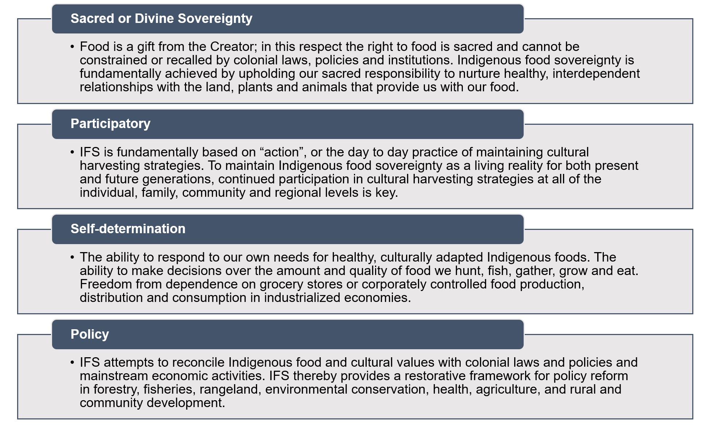
3 Food Sovereignty
“You cannot say you are sovereign if you cannot feed yourself.”
These words were spoken to Winona LaDuke by Sugar Bear Smith as they are recorded in the foreword of Indigenous Food Sovereignty in the United States. Devon Mihesuah, the lead editor of this book, outlines this as a movement away from the more limited framework of “food security”:
“The food sovereignty movement, in contrast, seeks to address intersecting issues of hunger, environmentally unsustainable production, economic inequality, and social justice on a political level. The goal is to democratize food production, distribution, and consumption, shifting ‘the focus from the right to access food to the right to procure it’”
– Mihensua, 2019
Through an Indigenous lens, “the concept of Indigenous food sovereignty is not focused only on rights to land, food, and the ability to control a production system, but also responsibilities to and culturally, ecologically, and spiritually appropriate relationships with elements of those systems.” In this way, it is impossible to understand the movement towards co-management without a discussion of Indigenous Food Sovereignty (IFS).
This is summarized by the Working Group on Indigenous Food Sovereignty:
Figure 2.1: Definition of Indigenous Food Sovereignty (Working Group on indigenous Food Sovereignty, 2023).
This chapter explores a collection of studies, practices, and stories highlighting Indigenous coastal food sovereignty in the Pacific Coast.
Indigenous Climate Justice and Food Sovereignty
Kyle Powys Whyte. Indigenous Food Sovereignty in the United States. Chapter 14. 2019.
In his chapter in Indigenous Food Sovereignty in the United States, Kyle Powys Whyte provides a short and powerful connection between food, climate, and (cultural) continuance. He makes the link between food systems as collective capacities which, when rooted in relationships of trust, facilitate three key types of capacities:
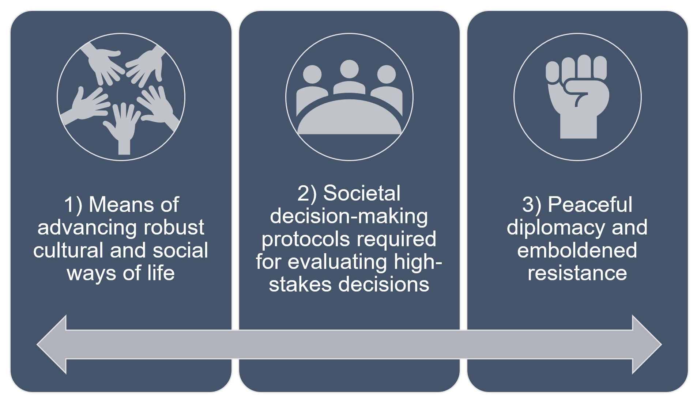
Figure 2.2: Core capacities enhanced by attaining food sovereignty (Whyte, 2019).
Whyte and his colleagues referenced in the chapter understand these capacities as essential to Native resilience in the face of climate change. He highlights commentary from Inuit communities which are facing an accelerated rate of climate change and profound loss of culture associated with the loss of ice and their traditional food ways.
Whyte calls particular attention to Treaty Rights At Risk, an initiative led by the Northwest Treaty Tribes in Washington. Launched in 2011, the initiative calls attention to the way the U.S. government continues to violate treaties by permitting activities like dam construction that threaten Native food ways. Issues specific to fisheries are coordinated under the Northwest Indian Fisheries Commission which represents the interests of these 20 Treaty Tribes in Washington. This organization was established following the landmark Boldt Decision in 1974 that legally established the tribes as co-managers of the salmon fishery with the state of Washington.
Whyte also emphasizes the Karuk Climate Adaptation Plan in this context, which works to “restore trust in their own knowledge systems, experts, and educational processes” in a way that is focused on “opening people up to developing more reciprocal relationships with nonhumans.” A similar version of this article is available online at this link.
Charlotte Coté. Humanities 5.3. 2016.
Coté’s article opens with a quote from Robin Wall Kimmerer’s seminal work, Braiding Sweetgrass.
“In the indigenous worldview, a healthy landscape is understood to be whole and generous enough to be able to sustain its partners. It engages land not as a machine but as a community of respected non-human persons to whom we humans have a responsibility…reconnecting people and the landscape is as essential as reestablishing proper hydrology or cleaning up contaminants. It is medicine for the earth.”
– Kimmerer, 2013
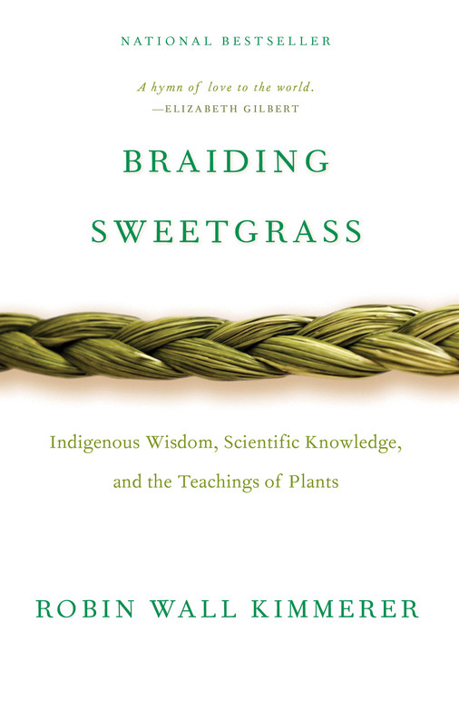
This is a good place to start the discussion around food sovereignty and explains how Indigenous people have a different relationship to their food systems wrought by their worldviews and experience of colonization. Coté summarizes this:
“Indigenizing the food sovereignty movement means moving it beyond the rights based discourse to emphasize cultural responsibilities and relationships that Indigenous peoples have with their environment. It also requires examining the efforts being made by Indigenous communities to restore these relationships through the revitalization of their Indigenous foods and ecological knowledge systems as they assert control over their own wellbeing.”
– Coté, 2016
3.1 Wild Harvest
Protecting the Coast with the Tolowa Dee-Ni’
PBS. Tending Nature. 2018.
This episode of Tending Nature takes the viewer on a journey to the majestic North Coast of California at the mouth of the Smith River, one of the last remaining undammed rivers in the state. It explores how leaders and members of the Tolowa Dee-Ni’ are revitalizing traditional harvesting of shellfish and interacting with the state-managed marine protected area network. The Tolowa Dee-Ni’ are one of four founding member tribes of the Tribal Marine Stewards Network cited in the co-management chapter.
Sanjay Rawal (Director), 2020.
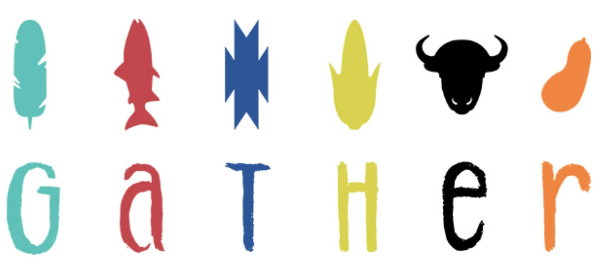
This film, created in partnership with the First Nations Development Institute, features stories of five Native people fighting to advance food sovereignty in their communities. The portion of the story focused on coastal foods highlights the Native youth engagement work led by Samuel Gensaw (Yurok) in his homelands on the Klamath River. The sections of the film led by Samuel highlight the impacts of the loss of salmon for Native communities in the region and the importance of fishing as a vehicle for cultural reconnection. The Klamath, a verdant land where the redwoods meet the sea and freshwater flows year round, is considered a food desert with the nearest supermarket dozens of miles away. This paradox was highlighted by both Frankie Myers, the Yurok Vice Chairman, and Brook Thompson, a Yurok academic and restoration engineer, in the VOA special, The Inside Story - Undamming the Klamath.
Enabling coexistence: Navigating predator-induced regime shifts in human-ocean systems
Jenn Burt et al. People and Nature 2. 2020.
Research across several indigenous communities in British Columbia and Alaska revealed a diversity of opinions and attitudes towards predator reintroduction that were significantly influenced by policy allowing or prohibiting traditional hunting and fishing rights. Alaskan Native communities that are allowed to hunt sea otters in accordance with provisions in the Marine Mammal Protection Act had a generally more positive attitude towards coexistence with otters that compete for subsistence seafood like shellfish. First Nations people in Canada displayed more negative attitudes and were not allowed to hunt sea otters or participate in meaningful management decisions. This study makes the connection between culturally informed management and food sovereignty, which have implications for the success of broader ecological restoration work.
The authors specifically highlight the following components as key aspects of increasing coexistence:
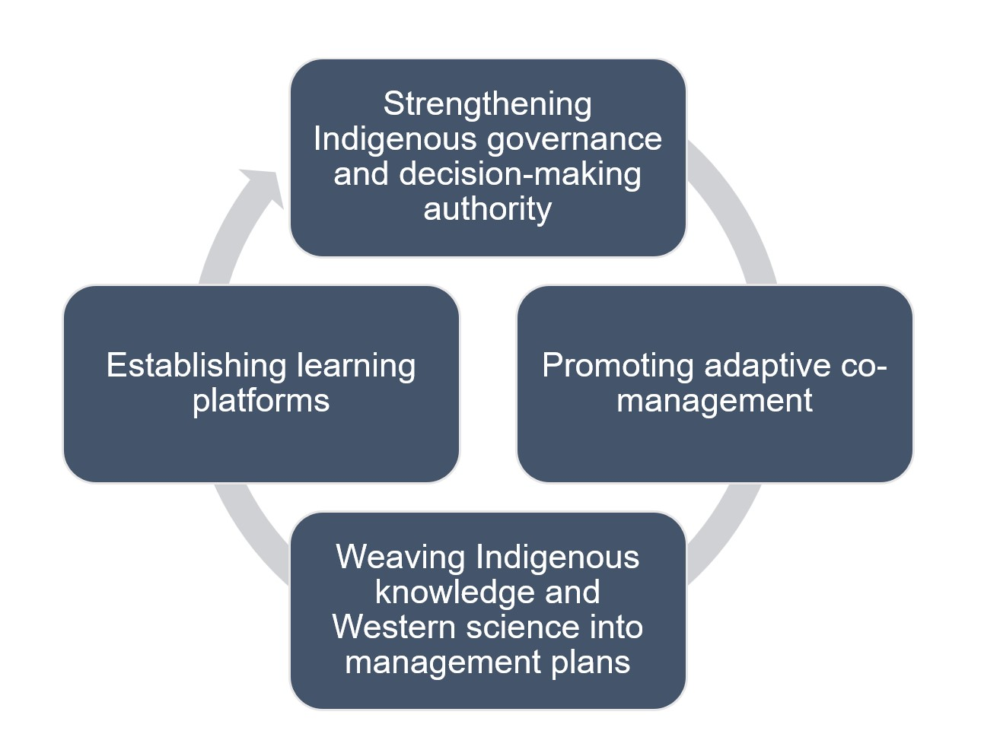
Figure 2.3: Recommendations to enhance coexistence between marine predators and humans (Burt et al., 2020).
Our Hands at Work: Indigenous Food Sovereignty in Western Canada
Tabitha Robin. Journal of Agriculture, Food Systems, and Community Development 9.2. 2019.
This paper presents an overview of community-based food sovereignty initiatives in Western Canada. The author notes that food insecurity rates are higher in First Nations communities compared to other groups and stresses a need to move away from “damage centered research” that reinforces the notion that Indigenous communities “exist in a state of defeat.” There is a related need to reposition understanding “sovereignty” outside of Western legal frameworks. In this sense, Indigenous Food sovereignty is a “movement and a way of life to address the broken connections between people, land, water, food, and culture.”
The paper highlights 24 examples of food sovereignty practices in Canada, one of which is the Coastal Stewardship Network led by the Coast First Nations. The network exists to support coastal guardians and Indigenous-led governance and monitoring of coastal areas in British Columbia.
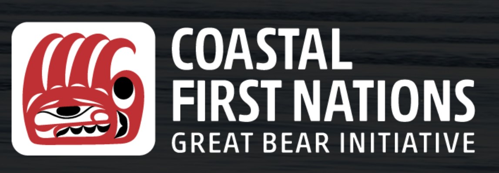
Kua’aina Ulu ’Auamo: Grassroots Growing through Shared Responsibility
Kevin Chang et. al. Indigenous Food Sovereignty in the United States, Chapter 4. 2019.
This chapter of Indigenous Food Sovereignty in the United States focuses on Native Hawaiian food systems which integrate land-sea and wild-cultivated elements. It draws on the ongoing efforts of organizations like Kua’aina Ulu ’Auamo (KUA) seeking to strengthen food sovereignty by revitalizing traditional practices like fish pond (loko iʻa) aquaculture and seaweed (limu) harvesting. Food sovereignty is a focus of these groups in an era where upwards of 90 percent of food consumed on the Hawaiian islands is imported. The authors note that island-based food systems once supported a population similar in size to the present day before colonization. In the case of seaweed, the suppression of traditional harvesting and diversion of freshwater to support colonial fruit plantations led to a decline in both the abundance and diversity of seaweed in the islands. This conversation has arisen in the modern day where water diversions for urban and tourism centers have often come before the needs of ecosystems and Indigenous communities.
The authors advocate for the revitalization of konohiki, a “biocultural” management approach that centers community relationships. This is visualized in the coordinated movements of schools of surgeonfish (pualu), a collective effort aimed to achieve a state of abundance (’aina momona). Traditional Ecological Knowledge is the foundation of this state, something the authors stress can be “retained, rediscovered, or redeveloped” like the mending of a “tattered net.” These systems are often not afforded protection under state management regimes. The authors cite “burdensome permitting processes” as a key barrier to loko iʻa restoration efforts. This led to the creation of legislation supporting Community-Based Subsistence Fishing Areas (CBSFAs) to protect the “traditional and customary” gathering rights.
“CBSFAs and supporting programs allow for forms of co-governance and co-management more akin to the konohiki approach, a departure from the current top-down, one-size-fits-all approach to resource management in Hawai’i.”
– Chang et al., 2019.
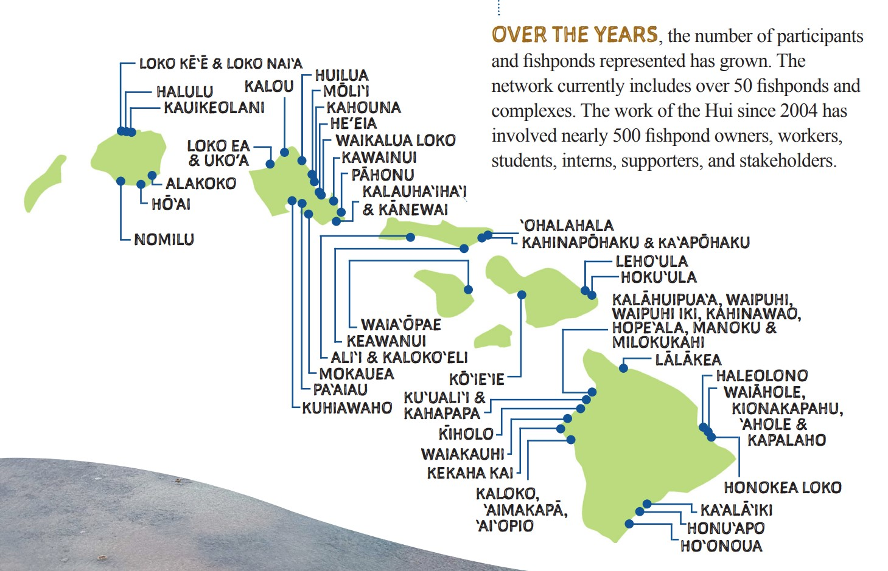
Figure 2.4: Loko i’a network managed by KUA (KUA, 2014).
Here, the connection between co-management and food sovereignty – the two primary chapters of this document – is made especially clear. It also makes an essential point; co-management is an ethos or approach that can serve as a guide for actual agreements more tailored to the specific needs of people and place.
Melanie Lindholm, Indigenous Food Sovereignty in the United States, Chapter 5. 2019.
Similar to the experience of Native Hawaiians, Native Alaskan communities face a form of “nutritional colonialism” where Native people are separated from their food systems and forced into a dependence on expensive imported foods of lesser cultural and nutritional value. This is visualized in the following graphic.
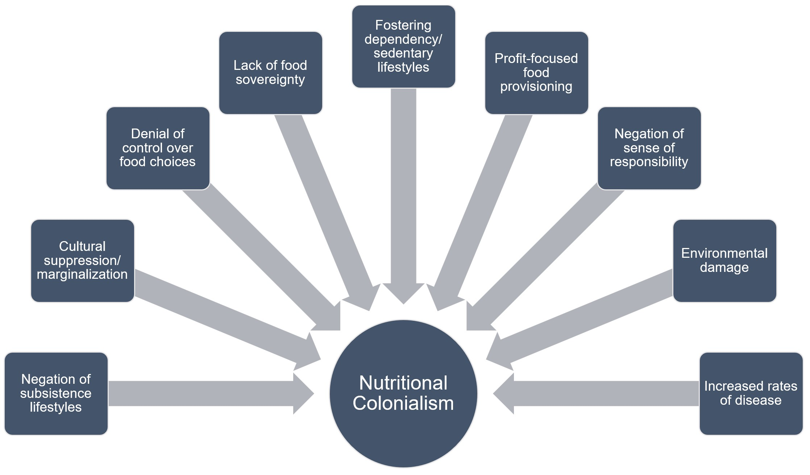
Figure 2.5: Components of “Nutritional Colonialism” (Lindholm, 2019).
In the Alaskan context, there is “state and federal conservation legislation that restricts Natives’ access to their subsistence lands. Hunting seasons and restrictions on the number, species, and place of game hunted have significantly disrupted the Native subsistence economy.” The author goes on to note that in the particularly climate change-sensitive Arctic, “policies and management cannot respond to environmental change as quickly as the hunter or fisher needs. This means that subsistence-dependent members must often break the law in order to survive.”
This is further complicated when extractive industries stake claims to resources in sensitive hunting and fishing grounds. The Gwich’in continue to advocate for their subsistence-based lifestyle amid ongoing turmoil around oil drilling in the Arctic National Wildlife Refuge (ANWR). Perspectives of Tribal leaders and community members were presented in the Patagonia documentary “Public Trust.”
Food Sovereignty, Food Hegemony, and the Revitalization of Indigenous Whaling Practices
Charlotte Coté. The World of Indigenous North America, Chapter 12. 2014.
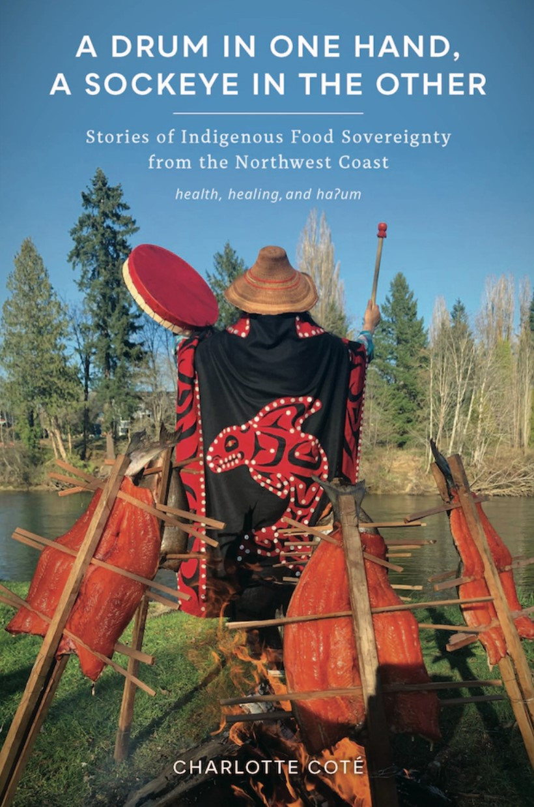
This chapter focuses on the fight of the Makah and Nuu-chah-nulth to reclaim ancestral whaling practices off the Washington and British Columbia coasts. This reclamation was actively resisted by non-Native (mamalhn’i) conservation organizations like Sea Shepherd, despite the fact that these rights are protected by treaty and integral to their identity as a people. Whales accounted for up to 75 percent of all mean and oil consumed by the Makah in eras before whaling was prohibited. When the Makah moved to restore whaling traditions following the removal of the gray whale from the endangered species list in 1994, an anti-whaling coalition formed up against them. This occurred despite the fact that the tribe secured a quota from the International Whaling Commission in 1997. The first gray whale (sih-xwah-wihx) in over 70 years was killed in 1999. This set off a barrage of lawsuits that has prevented further hunts for the next two decades. The Makah are currently awaiting the final decision, scheduled to happen in 2023, on a waiver request submitted to NOAA fisheries made in 2005 that would allow them to continue their ancestral and treaty-protected subsistence whaling tradition.
The author highlights a trend where “non-Native society attempts to lock Indigenous peoples and cultures at the time when Native and non-Native people first came into contact.” This is the ethos that led the anti-whaling coalition to question the “cultural authenticity” of the restored whaling practice. The anti-whaling constituency leveraged federal law under the Marine Mammal Protection Act (MMPA) to win their case in the court, halt the practice, and set off the lengthy waiver process that currently awaits final approval.
Coté speaks at length on a wider range of food sovereignty initiatives in their recently published book, A Drum in One Hand, a Sockeye in the Other: Stories of Indigenous Food Sovereignty from the Northwest Coast
Conservation for the Anthropocene Ocean: Interdisciplinary Science in Support of Nature and People
Phillip Levin and Melissa Poe. Academic Press. 2017.
This book considers a range of threats to ocean-based food systems with an emphasis on risks from climate change. Its chapters present a view that “conceptualizes nature and people as part of shared ecosystems,” making room for Indigenous perspectives.
Chapter 9 - Ocean Cultures: Northwest Coast Ecosystems and Indigenous Management Systems focuses on the Pacific Northwest and a push to view Native people as stewards and not only harvesters. The key systems that the chapter highlights are “clam gardens, salmon production, and estuarine root gardens.”
Chapter 19 - Implications of a Changing Climate for Food Sovereignty in Coastal British Columbia explores this in the context of the ’Namgis First Nation on Vancouver Island. The authors claim that most, but not all, of the foods deemed key to a traditional diet are compromised by climate effects.
“Fish as food”: Exploring a Food Sovereignty Approach to Small-scale Fisheries
Charles Levkoe et al. Marine Policy 85. 2017.
This article, written by non-Native authors, poses a shift in the narrative around fisheries. Specifically, they advocate for a research and management ethos that considers “fish as food” instead of viewing fish as a commodity or resource. This view creates more space in the management discourse for food sovereignty. It also provides a helpful section reviewing the evolution of fisheries management approaches Internationally and the connection to food sovereignty themes. The authors highlight the “seven pillars” of food sovereignty developed across several multilateral meetings:
| Food Sovereignty Pillar | Description |
|---|---|
| Focuses on food for people | Puts people at the center of food systems policies and understands food as more than just a commodity |
| Builds knowledge and skills | Recognizes the value of traditional knowledge and research as a way to share experiences |
| Works with nature | Takes an ecosystems approach recognizing the interrelationships of humans with the natural systems to improve resilience and cohabitation |
| Values food providers | Values and supports sustainable livelihoods |
| Localizes food systems | Closer connections between food providers and eaters in practice and policy and rejects dependencies on unaccountable corporations and inappropriate food aid |
| Puts control locally | Places control directly in the hands of local food providers, recognizes the need to inhabit and to share territories and rejects the privatization of natural resources |
| Food is sacred | Recognizes that food is a gift of life and part of people’s identities |
3.2 Aquaculture
Sea Gardens Across the Pacific: Reawakening Ancestral Mariculture Innovations
Pacific Sea Garden Collective. 2023.
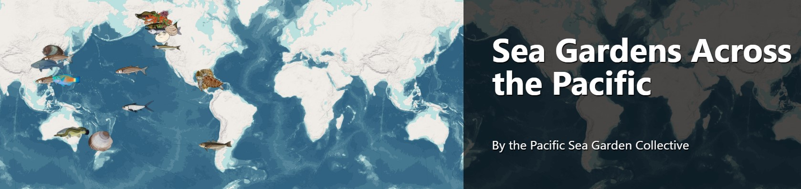
This resource, produced by a collaboration of primarily non-Native researchers from various universities, visualizes and collects stories on traditional mariculture, aquaculture, and ocean farming practices throughout the Pacific Ocean. In their words:
“Indigenous People have been stewarding the ocean for thousands of years. This interactive and ‘living’ story map of sea gardens, begins to synthesize information about ancestral mariculture across the Pacific Ocean. Rooted in intergenerational knowledge, ecological ingenuity, sophisticated governance systems, spirituality, and cultural practices, the ancestral stewardship of sea gardens has strengthened connections between people and places for millennia.”
– Sea Garden Collective, 2023
From clam gardens in the pacific Northwest to loko i’a (fish ponds) in Hawai’i, the story map presents a dynamic picture of the various ways Indigenous communities traditionally maintained relationships with coastal ecosystems. Many of these practices continue today or are being revitalized. One example of this is the Clam Garden Network which brings Native communities from Alaska, Canada, and Washington together to foster inter-generational knowledge sharing” for the restoration of ancestral food ways and self-determination.
Fisheries and Stewardship: Lessons from Native Hawaiian Aquaculture
Brenda Asuncion et al. First Nations Development Institute. 2020.
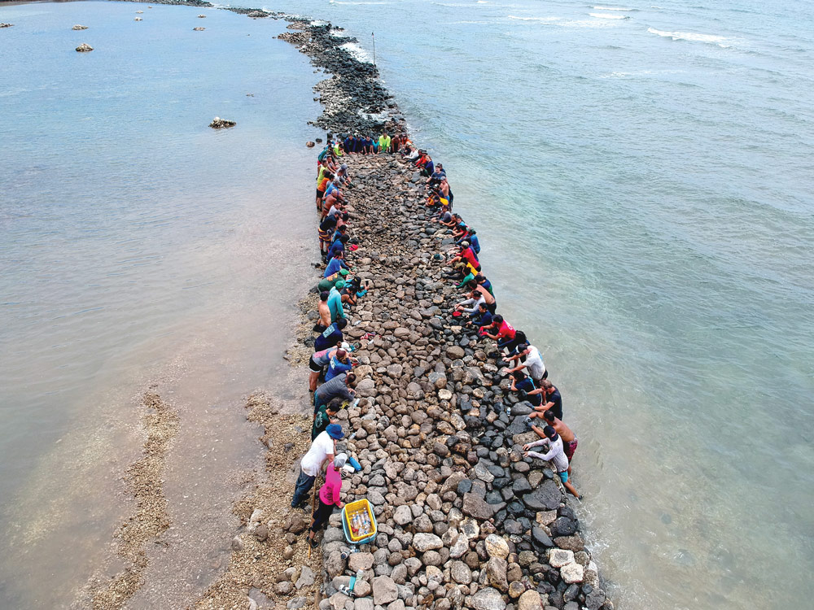
Ancient Hawaiian aquaculture practices that continue into modern times, including the use of traditional loko i’a (fish ponds), provide an example in dynamic food systems management. The loko i’a represent a legacy of deep knowledge and subsistence rooted in Indigenous Knowledge. After years of degradation and loss of food sovereignty as a result of colonization and the erosion of land tenure, community groups are working to bring back this ancestral practice. While some loko i’a are unrecoverable, others are at the forefront of community resource management in modern Hawai’i and a renaissance of Native Hawaiian (Kanaka Maoli) culture. This has been accompanied by an effort to disseminate knowledge and practices which led to the convening of a multi-day “Indigenous aquaculture summit and cultural exchange” on Oahu in 2020.
The authors highlight the special role that loko i’a play as physical sites, serving as “important kīpuka—which literally means oasis/oases, but figuratively means receptacle(s)—for the renewal of traditional practices and values in contemporary ways.”
A Native Perspective on Regenerative Ocean Farming
Dune Lankard. 2021.
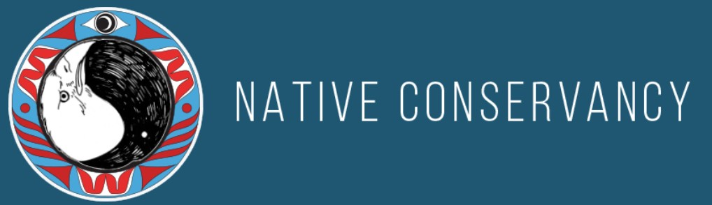
The Native Conservancy, an organization founded and run by Native Alaskans, is working to merge modern aquaculture practices with traditional food ways in their region. This is largely in response to disaster-driven declines in wild fish populations, which has necessitated the creation of new relationships with the ocean for many isolated communities. Dune Lankard, the organization’s founder, explains his vision:
“Our goal at Native Conservancy was to do more than just protect wild salmon habitat. We aimed to get involved in protecting our unique subsistence way of life. Even though we had led successful conservation campaigns over decades to permanently protect over 1 million acres of wild salmon forest habitat that was scheduled to be clear-cut in the parallel path of the Exxon Valdez oil spill, we knew that saving habitat just was not enough anymore. We had to honor our ancestors and apply the lessons of the past to the challenges we were facing. Growing restorative habitat and entering the kelp space was the answer … This is also an opportunity to change our relationship with food. We need to respect traditional food sources, start growing and processing our own food, feed our communities, and market directly any excess.”
– Dune Lankard, 2021
The organization is currently rolling out a Native-led kelp farming capacity building initiative across the Alaksan coast. This complements their food sovereignty program which stresses the “re-localization of economies” and provision of subsistence foods and storage equipment to support elders and remote communities.
Fisheries and Oceans Canada. 2022.
The Canadian government is partnering with First Nations to establish a shellfish aquaculture zone in British Columbia. The initiative has been coined as the Area-Based Aquaculture Management (ABAM). According to the agency, “the pilot will enhance opportunities for collaborative governance related to aquaculture, and is expected to result in improved outcomes that better respond to local environmental, social, and cultural realities.”
This is part of a wider process to build goodwill between coastal First Nations and the Canadian government. In 2020, Fisheries and Ocean Canada announced a new collaboration with First Nations to review the impacts of, and eventually shutter, several open ocean salmon farming facilities in the province. This action was taken out of concern for the protection of remaining wild salmon populations in and around Vancouver Island. The agreement confirmed that the consent of First Nations was required to maintain operations.